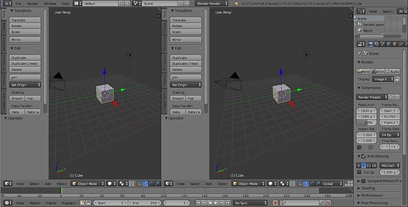

En el documento actual se detalla la actividad que se hizo en la semana 11. También se explicará el uso de una herramienta esencial a la hora de modelar objetos 3D, esta herramienta es llamada: Blender.
En esta semana se siguió realizando el cuarto paso (Prototipar) del Design Thinking. El objetivo del proyecto es realizar una simulación del desbridamiento quirúrgico de heridas por quemadura mediante la realidad aumentada. Por ello, resulta necesario modelar una herida por quemadura en 3D. Una herramienta eficiente a la hora de crear objetos en 3D es Blender.
Blender es la suite de creación 3D gratuita y de código abierto. Admite la totalidad de la canalización 3D: modelado, aparejo, animación, simulación, renderizado, composición y seguimiento de movimiento, incluso edición de video y creación de juegos. Blender se adapta bien a individuos y pequeños estudios que se benefician de su proceso unificado de desarrollo y respuesta. (1) La versión de Blender que será utilizada para modelar la herida por quemadura es la versión 2.75. Sin embargo, ¿Cómo modelar una herida en Blender? Antes de saber cómo modelar un objeto en 3D, es necesario conocer la interfaz de Blender y que conocer las diferentes funciones que tiene.
Una de las principales características del programa es que trabaja con ventanas flotantes, aunque a primera vista no lo parece. Cada ventana tiene su cabecera, en este caso se encuentra en la parte inferior de la ventana. Con la ventana información la cual esta en la parte superior se puede cambiar el tipo de ventana según lo que se necesite realizar. Otra función que nos permite la interfaz de Blender es la capacidad de poder duplicar ventanas en un mismo archivo, al duplicar una ventana la interfaz se ve de la siguiente manera:
Para ello debemos seguir los siguientes pasos: 1. Blender necesita partir de un objeto, para crear los vértices, se agrega un plano subdividido. 2. Se pulsa la tecla número 5 del teclado numérico para tener una vista ortogonal. 3. Se selecciona la tecla número 7 del teclado numérico para tener una vista desde arriba. 4. Se entra en modo edición y el plano subdividido desplácelo a una esquina, con la tecla A se deselecciona todo. 5. Para crear un vértice se tiene que tener que presionar Ctrol y se hace clic. Para ello el modo vértices debe estar activado. 6. También con la tecla E de extruir se puede ir agregando más vértices. Para cerrar lo bueno es utilizar el snap (el iman) seleccionando vértices. 7. A continuación, pulse la tecla A para deseleccionar todo, con la tecla B dibuje un nuevo marco y volvemos a seleccionar todos los vértices. 8. A continuación de la pestaña “Herramientas” del apartado “Remover” presione “Remover dobles”. Al hacerlo observamos un mensaje: “0 vértices removidos”, esto significa que los vértices se soldaron. 9. Ahora que ya tenemos los vértices nos interesa eliminar el plano porque si no seguirá siendo parte del objeto. 10. A continuación, presione la tecla A para deseleccionar todo y con la tecla B dibuje un marco para seleccionar todo el plano subdividido, seleccione la tecla X y elimine los vértices del plano. 11. Ahora si va al modo objeto veremos que el punto de rotación se encuentra dónde está el plano. 12. En el panel de la izquierda seleccione “Definir origen”. Y de este “Origen a la geometría”. Ahora el punto de rotación está en el centro de la figura que hemos creado. 13. Ahora para crear una malla en el objeto seleccione el menú estando en modo edición. De este, caras y por último “Rellenar”. Si ahora pulsa la tecla E obtiene en 3D la figura dibujada previamente
1. Sobre nosotros - blender.org [Internet]. [cited 2019 Nov 15]. Available from: https://www.blender.org/about/ 2. Verdugo Zamora PM. Tutorial de Blender 2.75. Available from: www.peremanelv.com